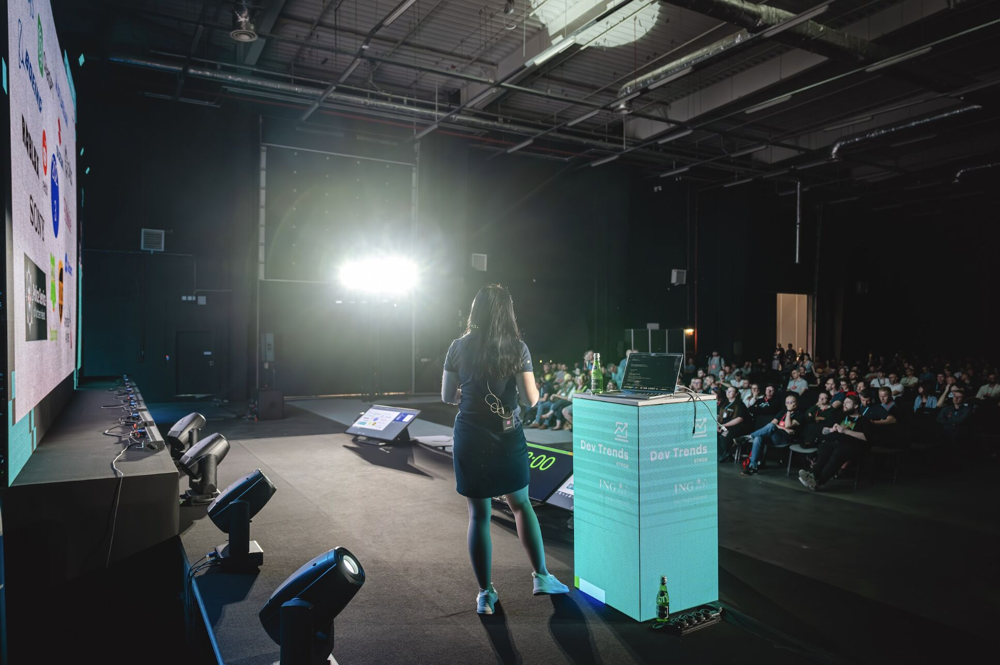

Zapytanie
Opisujesz grupę i potrzeby.
Warsztaty stacjonarne
AI, kompetencje przyszłości, kariera i rozwój potencjału.
Zapytaj o szczegóły
Praktyczna edukacja dla firm i kobiecych społeczności. AI, kompetencje przyszłości, kariera i rozwój potencjału.
Krok po kroku
Opisujesz grupę i potrzeby.
Ustalamy program, termin i wycenę.
Dopasowuję agendę i materiały.
Realizujemy praktyczne ćwiczenia i podsumowanie.
Sprawdź dostępność i warunki współpracy przed rezerwacją.
Zarezerwuj lub zapytaj